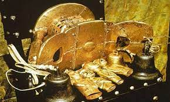

170. Sika dwa kofi (Golden Stool). Ashanti peoples (south central Ghana). c. 1700 C.E. Gold over wood and cast-gold attachments.
- Form
- Entire surface inlaid with golf
- Bells hang from the side to warn the king of danger
- Replicas often used in ceremonies, but each replica is different
- Function
- Symbol of the Ashanti nation, in Ghana
- Contains the soul of the nation
- Never actually used as a stool; never allowed to touch the ground; it is placed oj a stool of its own
- According to Ashanti tradition, it was brought down from heaven by a priest and fell into the lap of the Ashanti king, Osei Tutu
- It became the repository of the spirit of the nation; it is the symbol of the mystical bond among all Ashanti
- Context
- A new king is raised over the stool
- The stool is carried to the king on a pillow; he alone is allowed to touch it
- Taken out on special occasions
- War of the Golden Stool: March-September 1900:
- Conflict over British Sovereignty in Ghana
- A British representative who tried to sit on the stool caused an uproar and a subsequent rebellion
- The war ended with British annexation and Ashanti de facto independence